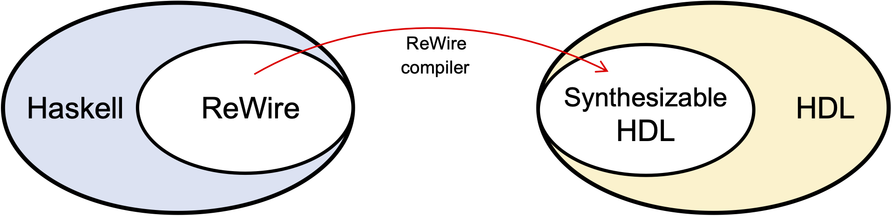
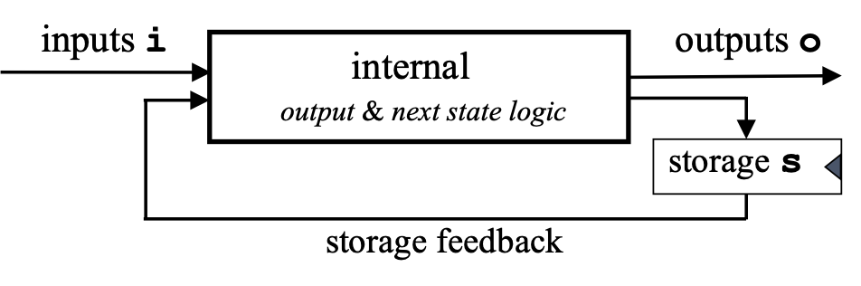
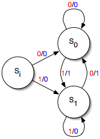

Chapter 1: Introduction
These are the tutorial notes for the ReWire language.
Prerequisites
Haskell
There’s no way of learning ReWire without knowing basic Haskell. Here are some good sources:
- Programming in Haskell by Graham Hutton. This is an excellent, step-by-step introduction to Haskell. Graham also has a lot of online resources (slides, videos, etc.) to go along with the book.
- Learn You a Haskell for Good by Miran Lipovaca. Highly amusing and informative; available here.
- A Gentle Introduction to Haskell by Hudak, Peterson, and Fasal. Available at http://www.haskell.org/tutorial/.
- Real World Haskell by Bryan O’Sullivan. Also available online (I believe).
- Google.
Monads in Haskell
You have to be comfortable with the basics of “monad wrangling”. You don’t need to understand them in any great depth, but understanding the following ought to do:
- The
Identitymonad; - the state monad; and
- the
Maybemonad.
Understanding the basic usage of the StateT monad transformer is important. It’s a shame that they are known as “transformer” instead of “constructor”, because all a monad transformer is is a way to construct monads in a canonical fashion.
Monads are a concept from Category Theory. I love Category Theory, really I do. But I’d strongly recommend avoiding categorical treatments of monads if this is your first time with this material. Rather, check out Graham Hutton or Miran Lipovaca’s texts as they’re both excellent.
Reactive Resumption Monads
These are a particular family of monads that can be used to precisely describe synchronous concurrency (e.g., like clocked computations in hardware). They sound scary, but they’re not. Check out the following papers of mine for the basics if you want. I suspect a lot of readers will just look at its usage in ReWire and get them well enough.
Monad Wrangling 101
ReWire is a monadic language, meaning that it is organized in terms of various monads (which ones, we’ll get to shortly). There are about a zillion tutorials on monads out there, and most of them are just terrible. This is a shame since the idea of a monad itself is really beautiful and, if you know how to use them correctly, they’re a really important part of functional programming practice. And, furthermore, they are a really important part of programming language semantics, too, and consequently an important part of formal methods properly understood.
What this section does is introduce the monad idea through a sequence of simple language interpreters. As we add features to the language, we have to change the monad we use to define the new interpreter. We will see four interpreters whose core is a language of simple arithmetic expressions.
To see all of the monads discussed in this tutorial defined in one convenient Haskell file, download this: MonadWrangling.hs. These monad and monad transformer definitions are in the style of earlier versions of GHC, which were immensely easier to understand than the current mess.
Simple Arithmetic
Simple Arithmetic Expressions
The first interpreter, found in Arith.hs, defines a language Exp that has integer constants, negation, and addition. These correspond to the constructors Const, Neg, and Add of the Exp data type. The interpreter eval0 does not use a monad and should be fairly self-explanatory.
module Arith where
data Exp = Const Int | Neg Exp | Add Exp Exp
instance Show Exp where
show (Const i) = show i
show (Neg e) = "-" ++ show e
show (Add e1 e2) = show e1 ++ " + " ++ show e2
eval0 :: Exp -> Int
eval0 (Const i) = i
eval0 (Neg e) = - (eval0 e)
eval0 (Add e1 e2) = eval0 e1 + eval0 e2
c = Const 99
n = Neg c
a = Add c n
Loading this into GHCi gives you what you’d expect:
λ> a
99 + -99
λ> eval0 a
0
The Identity Monad is a Big Nothingburger
We introduce now the Identity monad, which doesn’t really give you anything at all. I introduce it first because it uses Haskell’s built-in monad syntax, and it’s useful to meet that syntax first when the monad is just a big nothing. The code for this section is found in IdentityMonad.hs and IdentityMonadDo.hs.
First, here’s the new interpreter eval1. The salient point is that eval0 and eval1 are doing the same thing, but what’s all this return and >>= business? (They’re explained below if you want to skip ahead.)
module IdentityMonad where
import Control.Monad.Identity -- this is new.
data Exp = Const Int | Neg Exp | Add Exp Exp
instance Show Exp where
show (Const i) = show i
show (Neg e) = "-" ++ show e
show (Add e1 e2) = show e1 ++ " + " ++ show e2
eval1 :: Exp -> Identity Int
eval1 (Const i) = return i
eval1 (Neg e) = eval1 e >>= \ v -> return (- v)
eval1 (Add e1 e2) = eval1 e1 >>= \ v1 -> eval1 e2 >>= \ v2 -> return (v1 + v2)
c = Const 99
n = Neg c
a = Add c n
The Identity monad has the following definition (it’s actually a simplification).
data Identity a = Identity a -- apologies for overloading the constructors.
return :: a -> Identity a
return v = Identity v
(>>=) :: Identity a -> (a -> Identity b) -> Identity b
(Identity v) >>= f = f v
So, return just injects its argument into Identity. The operation >>= (a.k.a., “bind”) boils down to a backwards apply. It’s just a whole lot of applying and pattern-matching on the Identity constructor, signifying nothing. When you load all this into GHCi, you get just what you’d expect:
λ> a
99 + -99
λ> eval1 a
Identity 0
λ>
Lessons Learned
As people say, eval1 and eval0 are morally equivalent, in the sense that, if you were so inclined, you could prove the equality eval1 a = Identity (eval0 a) holds for any a.
Monadic Syntactic Sugar or Saccharine?
Haskell overloads its monad syntax, so when we see the >>= and return again, they will be typed in different monads than Identity. Overloading is great for some uses, because it removes clutter. I find for formal methods it can be kind of confusing. So, reader beware!
There is also another shorthand for >>= that is frequently used called do notation; it’s defined as:
x >>= f = do
v <- x
f v
So, the clause of eval1 for Neg is as follows when written in do notation:
eval1 (Neg e) = do
v <- eval1 e
return (- v)
The code IdentityMonadDo.hs just reformulates the code in IdentityMonad.hs using do notation.
2nd Interpreter: Errors and Maybe
The code for this section is found in Errors.hs. This new interpreter adds a new arithmetic operation Div. I pasted in the eval0 with a new case for Div.
module Errors where
data Exp = Const Int | Neg Exp | Add Exp Exp
| Div Exp Exp -- new
instance Show Exp where
show (Const i) = show i
show (Neg e) = "-" ++ show e
show (Add e1 e2) = show e1 ++ " + " ++ show e2
show (Div e1 e2) = show e1 ++ " / " ++ show e2
-- | Same as before, but with a new case
eval0 :: Exp -> Int
eval0 (Const i) = i
eval0 (Neg e) = - (eval0 e)
eval0 (Add e1 e2) = eval0 e1 + eval0 e2
eval0 (Div e1 e2) = eval0 e1 `div` eval0 e2 -- new
a = Add c (Neg c)
where
c = Const 99
uhoh = Div (Const 1) (Const 0) -- new
Note that, when you run the Div-extended version of eval0, things don’t always end well:
λ> uhoh
1 / 0
λ> eval0 uhoh
*** Exception: divide by zero
λ>
Why can’t we just check for 0?
Think about it this way, what should I replace ???? with below? There’s no way of handling that exceptional case and it crashes the program.
eval0 (Div e1 e2) = if v2 == 0 then ???? else eval0 e1 `div` v2
where
v2 = eval0 e2
But with the Maybe monad, we can use its Nothing constructor for this erroneous case; recall the definition of the Maybe data type:
data Maybe a = Nothing | Just a
Here’s the definition of eval2 whhich is typed in the Maybe monad:
eval2 :: Exp -> Maybe Int -- N.b., the new type
eval2 (Const i) = return i
eval2 (Neg e) = do
v <- eval2 e
return (- v)
eval2 (Add e1 e2) = do
v1 <- eval2 e1
v2 <- eval2 e2
return (v1 + v2)
eval2 (Div e1 e2) = do
v1 <- eval2 e1
v2 <- eval2 e2
if v2==0 then Nothing else return (v1 `div` v2) -- fill in ???? with Nothing
λ> uhoh
1 / 0
λ> eval2 uhoh
Nothing
Maybe Under the Hood
Below is the definition of the Maybe monad. The way to think of a computation x >>= f is that, if x is returns some value (i.e., it’s Just v), then just proceed normally. If an exception is thrown by computing x (i.e., it’s Nothing), then the whole computation x >>= f
data Maybe a = Nothing | Just a
return :: a -> Maybe a
return v = Just v
(>>=) :: Maybe a -> (a -> Maybe b) -> Maybe b
(Just v) >>= f = f v
Nothing >>= f = Nothing
3rd Interpreter: Adding a Register
The code for this section is Register.hs.
module Register where
import Control.Monad.State
data Exp = Const Int | Neg Exp | Add Exp Exp
| X -- new register X
instance Show Exp where
show (Const i) = show i
show (Neg e) = "-" ++ show e
show (Add e1 e2) = show e1 ++ " + " ++ show e2
show X = "X"
-- | Just a copy
eval2 :: Exp -> Maybe Int
eval2 (Const i) = return i
eval2 (Neg e) = do
v <- eval2 e
return (- v)
eval2 (Add e1 e2) = do
v1 <- eval2 e1
v2 <- eval2 e2
return (v1 + v2)
eval2 X = undefined -- How do we do handle this?
Here’s how we handle this:
- Create a new monad from
Identitywith anIntregister:StateT Int Identity - This new monad has two operations
getthat reads the current value of the registerputthat updates the value of the register
StateT Intis known as a monad transformer
The code below does just that
readX :: StateT Int Identity Int
readX = get
eval3 :: Exp -> StateT Int Identity Int
eval3 (Const i) = return i
eval3 (Neg e) = do
v <- eval3 e
return (- v)
eval3 (Add e1 e2) = do
v1 <- eval3 e1
v2 <- eval3 e2
return (v1 + v2)
eval3 X = readX
4th: Errors + Register
The code for this is RegisterError.hs. In this example, we want to add both a possibly error-producing computation along with the register. This is done mostly through monadic means.
module Register where
import Control.Monad.State
data Exp = Const Int | Neg Exp | Add Exp Exp
| Div Exp Exp -- Both errors
| X -- and a register X
instance Show Exp where
show (Const i) = show i
show (Neg e) = "-" ++ show e
show (Add e1 e2) = show e1 ++ " + " ++ show e2
show (Div e1 e2) = show e1 ++ " / " ++ show e2
show X = "X"
Here’s how we handle this:
- Create a new monad from
Maybewith anIntregister:StateT Int Maybe - This new monad has two operations
getthat reads the current value of the registerputthat updates the value of the register
StateT Intis known as a monad transformer
The code below does just that
readX :: StateT Int Maybe Int
readX = get
eval3 :: Exp -> StateT Int Maybe Int
eval3 (Const i) = return i
eval3 (Neg e) = do
v <- eval3 e
return (- v)
eval3 (Add e1 e2) = do
v1 <- eval3 e1
v2 <- eval3 e2
return (v1 + v2)
eval3 (Div e1 e2) = do
v1 <- eval3 e1
v2 <- eval3 e2
if v2==0 then lift Nothing else return (v1 `div` v2)
-- N.b., this is new.
eval3 X = readX
Hello Worlds
This first chapter introduces ReWire and collects the simplest possible examples.
What is ReWire?
ReWire is a domain-specific language embedded in the Haskell functional programming language (https://haskell.org). Every ReWire program is a Haskell program that can be executed just as any other Haskell program. This fact is simple and also very powerful, because it means that development of a hardware design can proceed incrementally, one function at a time, with the resulting new code being type-checked and/or tested. Once a developer is satisfied with their ReWire design, they can compile it automatically into a synthesizable HDL (hardware description language): Verilog by default, or VHDL.

Mealy Machines and ReWire types
There’s a mental model of digital circuitry used by hardware designers known as a Mealy machine. The flavor favored by hardware designers is portrayed below, which will seem odd to those of us who first heard of them from a class in theoretical computer science (e.g., https://en.wikipedia.org/wiki/Mealy_machine). Mealy machines are finite state machines combined with a clock that on each clock “tick” consume an input of type i, update a store of type s, and produce an output of type o.

In ReWire, there is a type corresponding to the Mealy machine above, the monadic type:
ReacT i o (StateT s Identity) ()
And, because it occurs so frequently, we refer to it as a device type some times. Things of this type are those that can be compiled to hardware.
Simple Mealy
Simple Mealy
The “theoretical computer science” picture of a Mealy machine is seen below:

Here si is the start state, and there are two other states, s0 and s1. There is also an alphabet consisting of 0 and 1. On the transitions, a red digit denotes an input and a blue digit denotes an output, so, in the machine is currently in state si and receives a 1 as input, it outputs a 0 and proceeds to state s1.
The ReWire code described in the section is found here, SimpleMealy.hs, and what follows is a line-by-line description.
First thing is to import a library with ReWire definitions, etc. What’s DataKinds? Don’t worry about it for now. Collected in a comment is a tabular form of the state transitions.
{-# LANGUAGE DataKinds #-}
import ReWire
-- Current State | Input | Output | Next State
-- --------------------------------------------
-- si 0 0 s0
-- si 1 0 s1
-- s0 0 0 s0
-- s0 1 1 s1
-- s1 0 1 s0
-- s1 1 0 s1
Next, let’s define the alphabet:
data Alphabet = Zero | One
Alphabet defines both the inputs and outputs of this Mealy machine.
Each of the three states and their transitions are defined in the following. Before focusing on the type, note first how each line below corresponds directly to a line in the table above. E.g., if the machine is in state si and receives 0 as input, it produces output 0, and proceeds to state s0.
si , s0 , s1 :: Alphabet -> ReacT Alphabet Alphabet Identity ()
si Zero = signal Zero >>= s0
si One = signal Zero >>= s1
s0 Zero = signal Zero >>= s0
s0 One = signal One >>= s1
s1 Zero = signal One >>= s0
s1 One = signal Zero >>= s1
We’ll return to the types of si, s0, and s1 momentarily.
Finally, we need to designate a start state, just as with any state machine definition.
start :: ReacT Alphabet Alphabet Identity ()
start = signal Zero >>= si
Why this type ReacT Alphabet Alphabet Identity ()?
We know the type will have the form ReacT i o m a for some types i, o, and a and monad m.
- The input alphabet is
Alphabet, soiisAlphabet. - The output alphabet is
Alphabet, soois alsoAlphabet. - We are not using internal storage like registers, so monad
mcan be justIdentity.
Finally, why () for return type a? Here, we have a choice, but it doesn’t matter in the least what we pick. Because start never, ever, terminates under any circumstances, it won’t ever return any value, so we may as well pick ().
This non-termination requirement on start is important and makes complete sense if you think about it. Hardware never terminates (unless it’s unplugged).
Fibonacci, of course
The Obligatory Fibonacci Example
The following Haskell code (the file is called Fib.hs) creates an infinite list of Ints in a conventional manner using the fibgen function.
module Fibonacci where
fibs :: [Int]
fibs = fibgen 0 1
where
fibgen :: Int -> Int -> [Int]
fibgen n m = n : fibgen m (n + m)
Loading Fib.hs into GHCi, you can see that it calculates the familiar Fibonacci sequence:
ghci> take 10 fibs
take 10 fibs
[0,1,1,2,3,5,8,13,21,34]
Making Hardware Out of This.
In the ReWire code below, fibdev plays the same role as fibgen above. For the moment, just ignore the monadic type, ReacT Bit (W 8) Identity (). (I’ll explain its significance shortly.) Instead of using Haskell’s Int type, we will compute over eight bit words (i.e., W 8). There is also a definition of start, which is a special symbol that unsurprisingly specifies how to start the device.
What fibdev does is, given two words n and m, it puts n on the output port using signal and accepts a new input b off of the input port. If bit b is 1, then it continues on. However, if b is 0, then it calls itself on m and m + n just like fibgen above.
{-# LANGUAGE DataKinds #-}
import Prelude hiding ((+))
import ReWire
import ReWire.Bits
start :: ReacT Bit (W 8) Identity ()
start = fibdev (lit 0) (lit 1)
fibdev :: W 8 -> W 8 -> ReacT Bit (W 8) Identity ()
fibdev n m = do b <- signal n
if b then fibdev n m else fibdev m (n + m)
Lessons Learned.
There are some lessons to be learned from this example.
- Just like a state machine, every ReWire device has to have a
start. - Most ReWire programs will begin with something like the top three lines of the previous ReWire code.
- There may be Haskell
Preludeoperations that have a particular meaning in ReWire (e.g.,+), and so they may need to be hidden explicitly. - The other parts of that incantation is performed to use built-in words and their operations.
- There may be Haskell
Carry Save Adders
Carry Save Addition
There are three carry-save adders in the tutorial, CSA.hs, SCSA.hs, and PCSA.hs, and the first of these is explained in detail below.
Carry save addition (https://en.wikipedia.org/wiki/Carry-save_adder) is defined as function f:
f :: W 8 -> W 8 -> W 8 -> (W 8, W 8)
f a b c = ( ((a .&. b) .|. (a .&. c) .|. (b .&. c) ) <<. lit 1 , (a ^ b) ^ c )
Here, I define f using ReWire’s built-in word constructor, picking W 8 for the sake of concreteness.
I’ll define a few constants for convenience in a running example.
_40 , _25 , _20 , _41 , _0 :: W 8
_40 = lit 40
_25 = lit 25
_20 = lit 20
_41 = lit 41
_0 = lit 0
Using GHCi, we can test it out, like any Haskell function:
λ> :t f
f :: W 8 -> W 8 -> W 8 -> (W 8, W 8)
λ> f _40 _25 _20
(Vector [False,False,True,True,False,False,False,False],Vector [False,False,True,False,False,True,False,True])
What’s this mess? W 8 values are represented internally using Haskell’s Data.Vector library and, well, it ain’t pretty. There is a ReWire library you can import to make all this more palatable called ReWire.Interactive:
λ> pretty (f _40 _25 _20)
(48,37)
λ> pretty (f _41 _25 _20)
(50,36)
λ>
Making a basic carry save adder
-- |
-- | Example 1. CSA
-- |
-- | The only thing this does is take its inputs i, computes csa on them, and
-- | output the results every clock cycle.
csa :: (W 8, W 8, W 8) -> ReacT (W 8, W 8, W 8) (W 8, W 8) Identity ()
csa (a, b, c) = do
abc' <- signal (f a b c)
csa abc'
start :: ReacT (W 8, W 8, W 8) (W 8, W 8) Identity ()
start = csa (_0, _0, _0)
First, csa consumes its three inputs a, b, and c as a tuple. Then, it computes the carry save addition on these and puts the result on the output port, signal (f a b c). Finally, it obtains the next inputs, abc' and continues.
What does the type of csa mean? It’s worth contemplating the type of csa’s codomain, which is ReacT (W 8, W 8, W 8) (W 8, W 8) Identity ().
- The input type is
(W 8, W 8, W 8), meaning that every it takes threeW 8s each clock cycle; - The output type is
(W 8, W 8), meaning that every it produces twoW 8s each clock cycle; and - It does not use any internal storage or registers, hence the
Identitymonad is used rather than a state monad.
Running it in GHCi
You can run this using pretty and runP from ReWire.Interactive. First, define some inputs that look familiar:
inputs :: [(W 8 , W 8 , W 8)]
inputs = (_40 , _25 , _20)
: (_41 , _25 , _20)
: (_40 , _25 , _20) : []
λ> :t pretty
pretty :: Pretty a => a -> IO ()
λ> pretty $ runP start ((_0 , _0 , _0) , (_0 , _0 )) inputs
((0,0,0),(0,0)) :> ((40,25,20),(0,0)) :> ((41,25,20),(48,37)) :> ((40,25,20),(50,36)) :+> Nothing
(WARNING: ReWire.Interactive is currently in super-king-kong-major-hacky form right now.)
Compiling it with RWC
First, here’s the entire file as it stands:
{-# LANGUAGE DataKinds #-}
import Prelude hiding ((^))
import ReWire
import ReWire.Bits
-- | ReWire compiler will complain if this is imported
import ReWire.Interactive
f :: W 8 -> W 8 -> W 8 -> (W 8, W 8)
f a b c = ( ((a .&. b) .|. (a .&. c) .|. (b .&. c) ) <<. lit 1 , (a ^ b) ^ c )
-- Constants for a running example.
_40 , _25 , _20 , _41 , _0 :: W 8
_40 = lit 40
_25 = lit 25
_20 = lit 20
_41 = lit 41
_0 = lit 0
-- |
-- | Example 1. CSA
-- |
-- | The only thing this does is take its inputs i, computes csa on them, and
-- | output the results every clock cycle.
csa :: (W 8, W 8, W 8) -> ReacT (W 8, W 8, W 8) (W 8, W 8) Identity ()
csa (a, b, c) = do
abc' <- signal (f a b c)
csa abc'
start :: ReacT (W 8, W 8, W 8) (W 8, W 8) Identity ()
start = csa (_0, _0, _0)
-- | ReWire compiler will complain if this is here (i.e., comment it before compiling):
inputs :: [(W 8 , W 8 , W 8)]
inputs = (_40 , _25 , _20)
: (_41 , _25 , _20)
: (_40 , _25 , _20) : []
Pro-tip. Because ReWire doesn’t know about things likes lists, ReWire.Interactive and the definition of inputs need to be commented out before compiling with rwc. Otherwise, you will receive a non-informative error message like this:
$ rwc CSA.hs --verilog
Control/Monad/Identity.hs:
Error: File not found in load-path
$
Assuming these are now commented out, you can proceed to compile CSA.hs with:
$ ls -l CSA.*
-rw-r--r-- 1 william.harrison staff 1039 Jun 13 09:02 CSA.hs
$ rwc CSA.hs --verilog
$ ls -l CSA.*
-rw-r--r-- 1 william.harrison staff 1039 Jun 13 09:02 CSA.hs
-rw-r--r-- 1 william.harrison staff 2159 Jun 13 09:04 CSA.sv
$
Crossbar Switch
What’s a Crossbar Switch?
To perform this exercise, I relied primarily on two sources to explain what a crossbar switch is; they are:
Given these explanations, I generated a Haskell implementation of a crossbar switch like function (see CrossbarSwitch.hs below). All the Haskell and ReWire code for this example can be found below.
What follows is an explanation of this code. First, we consider the Haskell definition of a crossbar switch, written in monadic style. Then, we transform the Haskell definition of the switch into proper ReWire. This is important because it gives you a practical introduction to the differences between Haskell and ReWire..
Just write it in Haskell first, then add a few bits to get your program into ReWire.
The usual mode of program development is to first write a version of the desired application in Haskell. The reasons to do this boil down to the GHC compiler being vastly more mature than the ReWire compiler, and so, for example, error messages are much more informative. Once all the kinks as it were are worked out in Haskell (e.g., getting something that typechecks, etc.), make whatever small tweaks are needed to get your program into the ReWire subset of Haskell. This section of the tutorial introduces the reader to this mode of program development.
The ReWire standard library
The standard definitions for ReWire programs live in the rewire-user package, which is bundled with the compiler; you bring them into scope with import ReWire. It includes the bit type (Bit), words of arbitrary width (W n, with the width as a type-level natural), and the device monad types (ReacT, StateT, Identity). Operations on words and vectors are in ReWire.Bits and ReWire.Vectors. Everything in these modules works with both rwc and GHC.
What follows is a crossbar switch function written in Haskell. We will take this as an input specification, by which we mean that it is not terribly important to actually understand what the crossbar function is calculating. Rather, what is interesting is what (little) must change in this specification to transform it into a proper ReWire specification.
{-# LANGUAGE DataKinds #-}
import Prelude hiding ((^), (+))
import ReWire
switch :: t -> t -> Bool -> (t, t)
switch x _ True = (x,x)
switch x y False = (x,y)
type W8 = W 8
data Maybe4 = Maybe4 (Maybe W8) (Maybe W8) (Maybe W8) (Maybe W8)
type Bool16 = (Bool,Bool,Bool,Bool,Bool,Bool,Bool,Bool,Bool,Bool,Bool,Bool,Bool,Bool,Bool,Bool)
crossbar :: Maybe4 -> Bool16 -> Maybe4
crossbar (Maybe4 x10 x20 x30 x40) (c11,c12,c13,c14,c21,c22,c23,c24,c31,c32,c33,c34,c41,c42,c43,c44)
= let
(x41,y31) = switch x40 Nothing c41
(x42,y32) = switch x41 Nothing c42
(x43,y33) = switch x42 Nothing c43
(_,y34) = switch x43 Nothing c44
(x31,y21) = switch x30 y31 c31
(x32,y22) = switch x31 y32 c32
(x33,y23) = switch x32 y33 c33
(_,y24) = switch x33 y34 c34
(x21,y11) = switch x20 y21 c21
(x22,y12) = switch x21 y22 c22
(x23,y13) = switch x22 y23 c23
(_,y14) = switch x23 y24 c24
(x11,y10) = switch x10 y11 c11
(x12,y20) = switch x11 y12 c12
(x13,y30) = switch x12 y13 c13
(_,y40) = switch x13 y14 c14
in
Maybe4 y10 y20 y30 y40
data Inp = Inp Maybe4 Bool16 | NoInput
data Out = Out Maybe4 | Nix
dev :: Inp -> ReacT Inp Out Identity ()
dev (Inp m4 b16) = signal (Out (crossbar m4 b16)) >>= dev
dev NoInput = signal Nix >>= dev
start :: ReacT Inp Out Identity ()
start = signal Nix >>= dev
Crossbar Switch in ReWire
So what must change to compile this with rwc? Happily, the days when this
section described a long list of tweaks (rewriting let as where, manually
inlining polymorphic functions, expanding type synonyms, and so on) are gone:
the code above is already a valid ReWire program, exactly as written in
CrossbarSwitch.hs. A few things are still worth
knowing when adapting a Haskell program for rwc:
-
Imports. Import
ReWire(and friends likeReWire.Bits) instead ofControl.Monad.Identity,Control.Monad.State, and so on – the monad types (Identity,StateT,ReacT) are built in to ReWire and re-exported by theReWiremodule. -
Modules. If the file has no module header, it is treated as
Main, andrwclooks for the start symbolMain.startby default. If you put your device in a different module, point the compiler at its start symbol with--start. -
Type signatures. Give every top-level definition a type signature. (Signatures are how definitions are checked against their uses, so leaving them off leads to error messages pointing at surprising places.)
-
GHC-only code. Anything
rwccan’t compile – lists used at the top level,ReWire.Interactiveimports for GHCi experimentation, class instances – needs to be commented out (or moved to a separate file) before compiling. Themaindefinition is the one exception:rwcignores it.
Once that’s settled, compile with the ReWire compiler rwc:
$ rwc CrossbarSwitch.hs
$ ls CrossbarSwitch.*
CrossbarSwitch.hs CrossbarSwitch.sv
By default rwc produces SystemVerilog (.sv); see rwc --help for other
targets and options. Depending on how successful one’s translation into
ReWire is, one may receive error messages from the ReWire compiler. These are
improving, although there is admittedly much room for improvement as of this
writing.